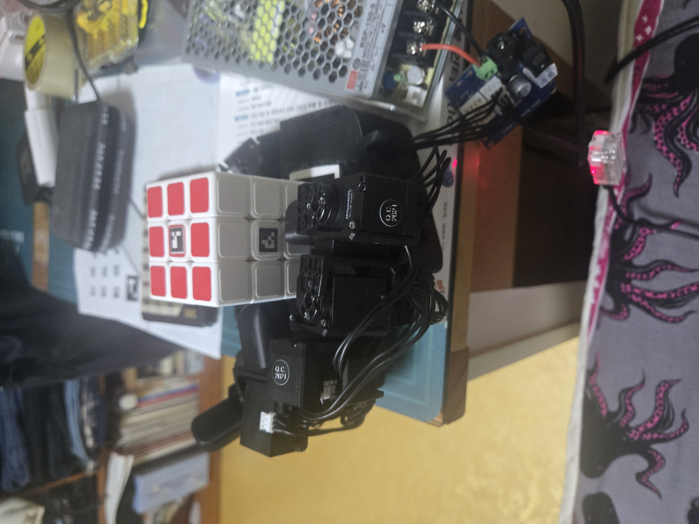
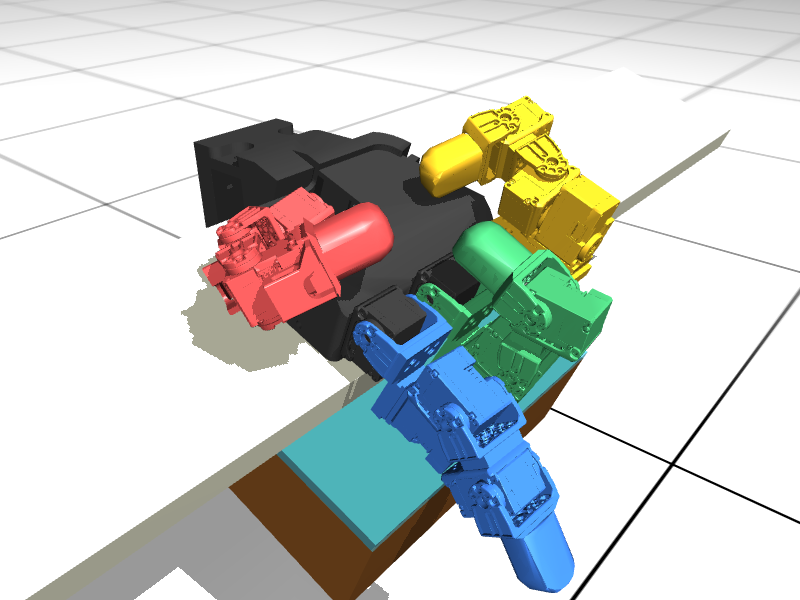
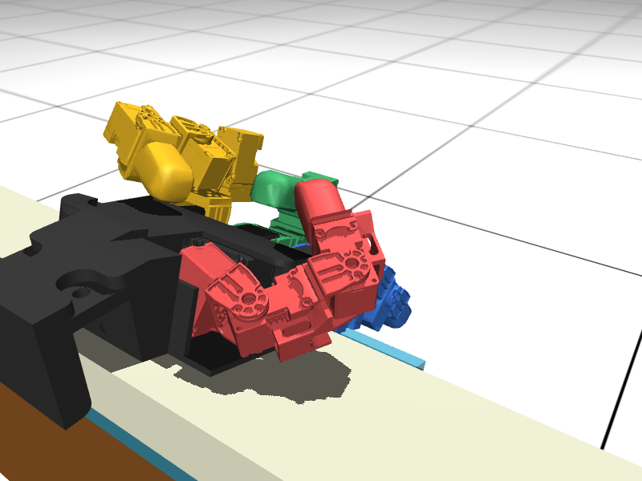

사진과 관절값의 동시 기록은 확인되지 않았다. 모델 그림은 옛16관절 읽기 값의 정적 형태이며 중지·엄지가 사진과 같다고 가정하지 않는다. 측정된 큐브 위치가 없어 모델 그림에서는 큐브를 표시하지 않았다.



파랑 검지 · 초록 중지 · 노랑 약지 · 빨강 엄지. 카메라는 사진에 정합한 시점이 아니다.
약지 ID13/15/14/16=3018/2961/2829/3053틱을 자르지 않고 정적으로 표시했다. 모델 범위를 넘은 ID14를 새 목표로 보내거나 제한을 변경하지 않았다. 이 그림은 동적 파지·실물 안전성·윗단 공간의 인증이 아니다.